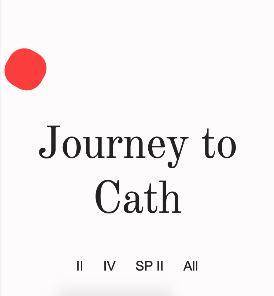

We have seen many layout methods come and go for CSS. All of them
have had their shortcomings. Picking a layout method has often felt
like picking the lesser of many evils with CSS! The good news is
that things are improving. Two recent additions to CSS are Flexbox
and CSS Grid. CSS grid is
just ready for widespread use, provides a nice complement to
flexbox. Both together solve many long standing problems with other layout
methods.
Flexbox is ideally suited for layouts that flow either horizontally
or vertically (which happens a lot with the current trends) and can
simplify responsive design with the ease at which it can switch
between those two flows.
CSS Grid excels with two dimensional layouts...where both the X and
the Y position of an element are critical.
In this activity we will be re-creating an existing webpage layout for
an artist/designers website:
Pierrick Calvez. Here are a few screenshots:
mobile,
mobile menu, and
large.
Things we know
From analyzing the original site we can learn the following:
Headline font: the site uses a font called "Domaine Display Narrow"
which we don't have access to...a close enough match you can use
from Google is "Old Standard TT"
Body font: the site uses a font called "Apercu webfont" for the
body, again we don't have access so "Helvetica, Arial, sans-serif"
should do the trick.
Font color: #222
Link color: link/visited: #222, hover: #f33
Art tiles: portrait is 35vw wide, landscape is 50vw wide, border:
2vw (mobile), 1.4vw (large). And I'll give you this as well...box-shadow: -4px 4px 17px 13px rgb(0 0 0 / 8%);
Mobile:
Main menu should take up the full viewport when open, and be
fixed.
Link color menu: link/visited: white, hover: N/A
Main menu font size: 34px, alt menu size: 18px
series menu font size: 18px
Footer menu font size: 15px
Title font size: 60px
Art tiles: border: 2vw,
Large:
All menu font sizes: 18px
Main title size: varies based on the size of the viewport...can
use something like 10vw
Using CSS Grid
Setup
Create a new directory on your computer for this project and open
it in your editor. Create the following files:
index.html, styles.scss,
_variables.scss, _utilities.scss,
_blocks.scss, and _compositions.scss. Add
the HTML necessary to start your page. Add your CSS file
in...let's also take a moment and add a comment towards the top of
our file that gives credit to the original design we are using.
Something like this:
<!-- This is a learning exercise re-creating the design from this page: https://www.pierrickcalvez.com/serie/journey-to-cath -->
Make sure to also import your partials into your main .scss file.
Continue then by writing the rest of the HTML we will need. After
you have written what you think you need compare to my HTML below
A few notes. First this is one take on this...it is not the only
way to organize the HTML for this page. If your HTML structure
is different that is ok. But I would make sure to compare the
differences!
You might have noticed that there is a checkbox next to the
element that will become our logo (the red ball). We need some
way to trigger our menu opening and closing on mobile. In this
case the
checkbox hack
will work nicely.
Notice that one of the menus is duplicated...it shows up in both
the footer, and in the main menu on mobile...this was the
simplest way to do that without using Javascript to move
it...note the aria-hidden="true" to hide the
duplicate from screen readers!
You are welcome to use my images or any of your own!
Architecture
Before we go further, stop for a moment and think about how you
would like to organize your code for this project. I've indicated
some of that with the setup...but there is more that we should do.
You have been introduced to the ideas behind
Atomic design
from the Zen project, and depending on which modules you have done
you may have also seen
BEM. This
project will introduce another methodology that works well with
what we are trying to accomplish:
CUBE CSS. Take a minute and read the linked article as well will be using
the concepts introduced to organize our CSS for this project.
Global Styles
According to CUBE CSS we should start by defining our global
styles. We can get a lot of the details about that from the
"Things we know" list above. Global styles are styles that should
almost always apply...everywhere on our site. Many of them will be
defined using element selectors! Begin by extracting the important
information out of the list above and into SCSS variables in the
variables partial. Fonts, colors, sizes should all go in there.
As we look at the different font sizes one shows up more than any
other: 18px. It would make sense to use this for our base. Add a
rule to your CSS (make sure to add the SCSS variable as well!):
html {
font-size: $base-font-size; // 1rem
}
Let's talk about sizes
Sizes and spacings can often get out of control on a site. If we
don't plan our sizings then we will end up with dozens of
arbitrary values littered throughout our CSS. If you have
studied
Typography
you will have learned that most good designers come up with a
measure and a scale they will use to ensure that all of the
sizes in the design complement each other and that none are
random. We can use
custom properties
in CSS to help us do the same.
Add the following CSS to your
_variables.scss partial:
What does this mean? If you look we have set two important
values above: the ratio, and the base (--s0) value. If we want
font one step (1.5 times) bigger than the base then we could add
var(--s1) to our CSS. If we want something to be
1.5 times smaller than the base we use var(--s-1).
If we use these for most of our font sizes and spacings (padding
and margin) we can establish a nice flow to our design.
The really nice thing here is that if we decide later that our
base should be larger/smaller than 18px we make one change and
everything will adjust to the new spacing and still look
awesome!
Check below to compare what you have in your variables to mine.
You will note one addition to my file that you won't
have...breakpoint sizes and the breakpoint mixin. Add
those to your file as we will use them later.
At this point we need to add the rest of the rules for our global
styles. Again work out your solution paying close attention to the
provided screenshots, and then compare to mine. As you are
comparing remember that the code I am providing is
one solution to this...not the only solution.
Click for Code...
// global
// I prefer the behavior of border-box, so I always include this
* {
box-sizing: border-box;
}
// set default font: 1rem
html {
font-size: $base-font-size;
}
// set base font family and color.
body {
font-family: $body-font;
color: $font-color;
background-color: $background-color;
}
// responsive image magic
img {
max-width: 100%;
}
// set headline font and styling...
// I thought the font we are using more closely matched the original site with the letters moved closer together.
h1,
h2,
h3 {
font-family: $headline-font;
font-weight: normal;
letter-spacing: -1px;
}
// set size for the main headling for both mobile and large...note the use of that breakpoint mixin.
// If you have forgotten how it works compile your SCSS and check out the resulting css rules.
// Note the use of the CSS custom properties and our size scale
h1 {
font-size: var(--s3);
text-align: center;
@include breakpoint(small) {
font-size: 10vw;
}
}
// Looking around the site we are replicating it looks like all the images have similar styling.
// I decided to wrap my images in figure elements so I could just style all of them across the site easily the same way.
figure {
margin: 0;
background-color: white;
box-shadow: -4px 4px 17px 13px rgb(0 0 0 / 8%);
border: 2vw solid #fff;
@include breakpoint(small) {
border: 1.4vw solid #fff;
}
}
// base link styling
a:link,
a:visited {
color: $font-color;
text-decoration: none;
}
a:hover {
color: $logo-color;
}
// the header on mobile needs some different link styles than normal...setting them up here.
header {
a:link,
a:visited {
color: white;
}
@include breakpoint(small) {
a:link,
a:visited {
color: $font-color;
}
a:hover {
color: $logo-color;
}
}
}
// lots of nice space around the contents in the main element.
main {
padding: 0 var(--s2) var(--s3) var(--s2);
}
// set font sizes and some margin for the footer.
footer {
font-size: var(--s-1);
margin-bottom: var(--s3);
@include breakpoint(small) {
font-size: var(--s0);
}
}
Utilities
The next thing we should look at is the styling for the menus.
There are three and for the wide screen they are styled very
similarly...horizontally with some spacing between them. The
complication comes with the mobile view...there some of the menus
are horizontal and others are vertical. Because of this the
styling for those was not a good fit for universal. The question
then is should they be utility or block classes?
You could probably argue successfully for either...but I am going
to recommend utility. A utility according the CUBE CSS should do
one thing and do it well. I think this applies. I think we should
go one step further as well because of the main menu that changes
and make a couple of mixins to use in our utilities and other
classes. Something like below should work well:
// format a list horizontally with spacing
@mixin horizontal-list($spacing: var(--s1)) {
list-style-type: none;
padding: 0;
display: flex;
flex-direction: row;
justify-content: center;
& > * + * {
margin-left: $spacing;
margin-top: 0;
}
}
// format a list vertically with spacing
@mixin vertical-list($spacing: var(--s-3)) {
list-style-type: none;
padding: 0;
display: flex;
flex-direction: column;
justify-content: center;
align-items: center;
& > * + * {
margin-top: $spacing;
margin-left: 0;
}
}
Since we will only end up with three mixins I did not make a
specific mixins partial file. If we had more that would be a good
idea however. You can place these with our other mixin in
_variables.scss. Notice that we pass in the amount of
spacing we want with a default. This will make our mixin more
reusable.
If you got to the line that said & > * + * and
wondered what in the world that was doing you probably are not
alone. Break that selector down to figure how it works.
"Find any element (*) that is the direct sibling of any other
element ( * + ), that is also a child of whatever element this
mixin was applied to and change it." The key is that it will
only apply to elements that have a previous sibling. Basically
this will apply the rule to all children of an element
except for the first child. It works great for spacing
like this where we only need spacing applied if there is more
than one child. It even has a name: "Lobotomized owl selector" * + *
After reviewing the screenshots I think 3 utility class would be
good. One to control the size of a portrait orientation object
(about 35vw should do it), one to control the size of a landscape
object (50vw) and one to make a horizontal menu that will use our
mixin. What about the vertical menu you might be asking? I decided
to put that functionality into a block. Why? It felt better that
way? Many of the decisions we make while organizing could be
argued. The important thing is that we have a reason for what we
do...and that we are consistent in our approach.
I decided to add one more thing to the portrait and landscape
classes. For our use we will be sizing images that are children of
figures. I'm setting my size on the parent, and then I want to
image to always be the same size as the parent.
Did you notice the 'u-' at the beginning of my class names? That
was done to help anyone who works on this (including myself)
know where to look for those classes in the css if they need to
be modified. It designates them as utility classes and lets us
know they will be found with the other utility classes. If this
were a larger project instead of a
_utilities.scss partial I would probably have created
a utilities directory and made a partial for each
utility! The same for the blocks and compositions. But in this
case adding them into one file works just fine.
The author of the CUBE CSS methodology actually had a different
solution to the prefix I have suggested...they introduce
patterns into the classlist like this:
class="[ main block ] [ other block classes ] [ utilities
]". How does that work! Remember that HTML and CSS were written
to be forgiving. When the browser sees something it does not
understand it ignores it. So if we added something like this:
class="[ brand ] [ gallery-grid ] [ portrait ]" the
browser would simplify it to:
class="brand gallery-grid portrait"
At the end of the day it does not matter which method you
use...again the important thing is to pick a method and
be consistent!
Blocks
There were two elements that jumped out at me as blocks: the logo,
and the mobile menu. Those should be styled next. The logo or
brand is the easier problem...do that first. Refer back to the
list of knowns at the top of the activity for the specifics on
that. the mobile menu is a bit trickier. I think a list of things
to do would be appropriate here:
Make the checkbox the same size as the logo, and make it
invisible.
Change the cursor for the checkbox to a pointer
Hide .b-main-nav__nav by default for mobile, also
make it as big as the screen and change the background color to
the logo color. The font size is also larger than normal for
mobile and white.
Set the list inside of the b-main-nav__nav to be vertical. Set a
margin-top of 25vh as well. the reason for this will be
explained below.
When the screen is large the list should be horizontal, the
__nav element should be normal sized and no background color,
font-size should also be reset back to normal.
The b-main-nav__home, and
b-main-nav__alt-nav elements should be hidden on
large screens, and shown on small when the checkbox is checked.
b-main-nav__alt-nav should be vertical, and the
size increased from the base.
When the box it checked the following should happen:
The logo should be turned white
.b-main-nav__nav, and .b-main-nav__alt-nav should both be
shown.
Other tweaking as needed...
I'll share my code again for you to review after you have
come up with your solution. Below is also a screenshot of what
your page should look like at this point. If you click in the
empty space right above the logo it should check your box and show
you if your styles are working for that. Not everything will show
correctly yet, we have some z-index issues, and haven't done our
layout yet...but you should see the main menu on a full red screen
if you click the checkbox.

Click for code...
// _blocks.scss
@use 'variables' as *;
.b-brand {
border-radius: $logo-size/2.4;
width: $logo-size;
height: $logo-size;
transform: rotate(30deg);
background-color: $logo-color;
}
.b-main-nav {
// styles for checkbox for checkbox hack
&__toggle {
width: $logo-size;
height: $logo-size;
opacity: 0;
cursor: pointer;
// when toggle is checked...
// turn logo white
&:checked + a .b-brand {
background-color: white;
}
// show main-nav__nav and main-nav__alt-nav
&:checked ~ .b-main-nav__nav,
&:checked ~ .b-main-nav__alt-nav {
display: block;
}
// get rid of the checkbox on large screens
@include breakpoint(small) {
display: none;
}
}
// main nav links styles
&__nav {
display: none;
// making this fixed is the best option for having it cover the screen
position: fixed;
top: 0;
height: 100vh;
left: 0;
right: 0;
background-color: $logo-color;
font-size: var(--s2);
// the margin is because we made this fixed it will ignore some of the other layout we will do.
> ul {
margin-top: 25vh;
@include vertical-list();
}
@include breakpoint(small) {
display: block;
position: relative;
background-color: inherit;
height: auto;
font-size: var(--s0);
> ul {
@include horizontal-list();
margin-top: 0;
margin-bottom: 0;
}
}
}
// special case for the home link that only shows on small
&__home {
@include breakpoint(small) {
display: none;
}
}
// special case for alt menu that only shows on small
&__alt-nav {
display: none;
font-size: var(--s1);
> ul {
@include vertical-list();
}
}
}
Compositions
Check out your site. While things still are not in the correct
locations, we have accomplished quite a bit already just by
defining the styles that we want consistently across the site. The
next step is composition. If you have been thinking to
yourself..."I thought this was a CSS Grid activity...". Now is
where we finally come back to that. This layout lends itself
nicely to CSS Grid.
We have two sections of our site that need layout attention: the
overlapping images, and the mobile menu. The menu should be done
first. It doesn't need much, mostly some z-index work to make sure
everything that should be show is shown. There two issues though:
our invisible checkbox should be placed on top of the logo, and
then the two menus should flow one after the other. If we just had
the second issue I think flexbox would be perfect, but since we
need to overlap CSS Grid will be a better solution.
Create a simple grid of one column and three rows. In this case we
should specify the height of the rows instead of letting the
browser decide. Looking at the menu screenshot on mobile
25vh 40vh 35vh look like good starting points for those
heights.
Next position the elements into the correct grid cell. The
checkbox and logo should overlap in the first cell. Then adjust
the z-index on each element until all show (and you can click on
the checkbox...it should be on top)
The other thing that we notice if you visit the actual site is
that the mobile menu is fixed when it is open...the user cannot
scroll away from it. Make this change as well.
Finally include a breakpoint to re-format the header for wide
screens. The logo and main menu should flow horizontally, and the
Home link, checkbox, and alt menu should be hidden (display:none)
As before work as far as you can then check out my solution below.
One note about this solution, because the header behaves the same
on all pages I opted to just tie the styles directly to the
header element. What are some potential disadvantages
with this approach?
Click for Code...
@use 'variables' as *;
header {
position: fixed;
top: 0;
left: 0;
right: 0;
display: grid;
grid-template-columns: 1fr;
grid-template-rows: 25vh 40vh 35vh;
justify-content: center;
justify-items: center;
align-items: center;
// this feels like a hack...done to keep the header from covering other elements (links) when the menu is closed.
height: 0;
> *:nth-child(1) {
grid-row: 1;
grid-column: 1;
z-index: 11;
}
> *:nth-child(2) {
grid-row: 1;
grid-column: 1;
z-index: 10;
}
> *:nth-child(3) {
grid-row: 2;
z-index: 9;
}
> *:nth-child(4) {
grid-row: 3;
z-index: 9;
}
@include breakpoint(small) {
display: flex;
flex-flow: column;
position: relative;
flex-flow: row nowrap;
justify-content: space-between;
padding: var(--s3) var(--s4);
height: auto;
margin-top: var(--s2);
}
}
Finishing up
The final step should be to create the second CSS Grid to position
the images. As you decide how many columns and rows you need, and
their sizes, It might be helpful to take the mockup image and draw
some lines on it either digitally, or print it out and do it
physically. This can help you see the grid. Once you have come up
with your solution you are welcome to compare it to mine.
Here is a link to the finished solution you can refer to if you had
problems with any of the steps above: Finished solution
Note! This is one solution to this
problem. You may have approached parts of this differently, which is
totally fine. Your code does not have to match this solution so long
as it provides the desired result, and it shows that you put some
thought and effort into the architecture of your CSS.